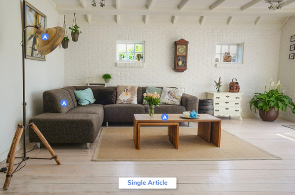
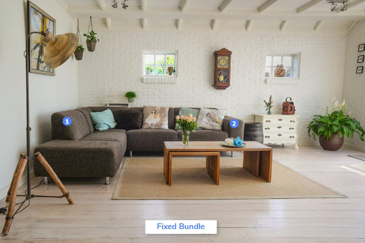
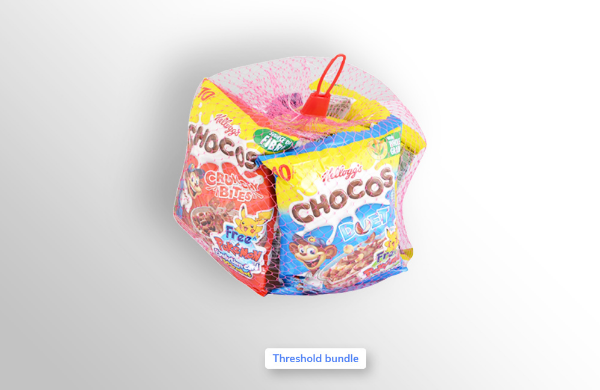
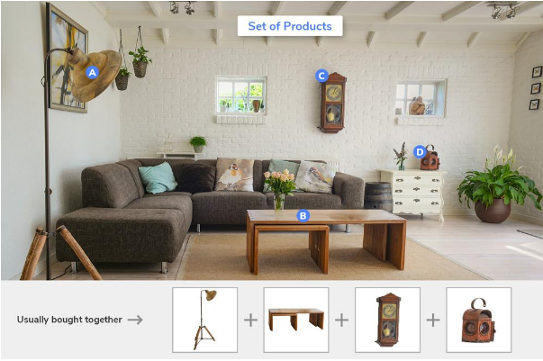
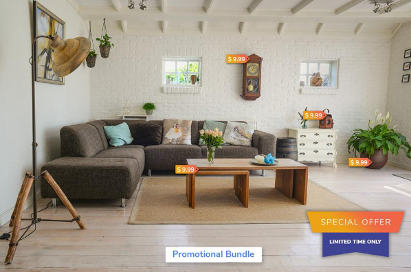
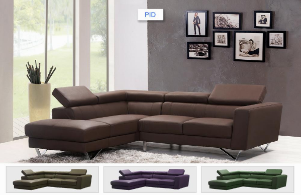
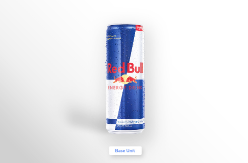
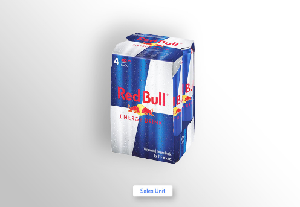
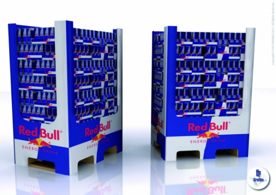

Introduction to Products¶
Overview¶
What is a Product?¶
Products are the merchandise offered to a market to satisfy a want or need. It is created through a process and provides benefits to a market. A chair, a table, or ‘set of furniture’ related to the dining room are examples of products. Similarly, a product can also be an idea or a service. In the CS Global System, a product can be a placeholder for a group of items of the same model or a standalone item up for sale. Here, you can create a product, enrich it with images, videos and classify it.
To give our customers the liberty of displaying the products in the most attractive manner and to aid the promotional activities, we have introduced various types of products, a detailed account of the same is described in the following section.
What are the types of Products in the system?¶
The CS Global System allows you to create a variety of products. Each type of product has a unique set of values/attributes assigned to it. Having various types of products enhances its use and makes it more relevant. For example, a chair is a good standalone product to sell, but a Dining Table usually sells with chairs.
Single Article¶
A Single Article is a standalone sellable item. This product type is typically used to create independent products. Items such as: chair, table-lamp, mattress etc. These Single Articles can be sold individually or grouped together to form a bundle. Furnishing items like chair, table, sofa, table-lamp are individual items for sale; when put together in a bundle they become a ‘living room set’.
Bundles¶
A bundle is a collection of items put together for sale by the retailer. In the CS system, a user (authorized person to use the system) can create two types of bundles, namely, Fixed Bundle and Threshold Bundle.
A Fixed Bundle is a group of items where the quantity of each item is fixed, while in a Threshold Bundle quantity of each item can be defined by the retailer.
A bedroom set with items like bed, mattress, side table and wardrobe form a bundle. A retailer can choose whether the items are tightly coupled (can’t be sold without the other) or loosely coupled (selling permutations like bed and wardrobe, bed and side table). The tightly coupled bedroom set will form a Fixed Bundle, while the loosely coupled items will come under the product type, Threshold Bundle.
In this picture, the part 1 and part 2 of the sofa are sold as a fixed bundle, since they can’t be sold individually.
In a Threshold bundle, the relevant products are grouped together to form a bundle. These products within the bundle can also be sold individually.
Set of Products¶
Similarly, it is possible to display relevant complementary products along with the main product, by using the product type – Set of Products. So, when the customer logs in to buy a sofa set, the complementary products such as lamp, coffee table or vase are displayed as well.
Promotional Collection¶
These are the products having the same price tag or on sale under a special promotional price. For example, Retailer ‘A’ puts a sale of stationery items at an eye-catching price of $9 or $19 or $29 or $39.
PID¶
A PID is a virtual product used to group a product line related to a Brand/Product. A PID is a set of similar products that differ in one or two properties. Use this product type for products with almost similar attributes and properties, although varying in a certain property. A sofa retailer may have sofas of similar dimensions but with different fabric or color.
Embedded - In a similar fashion, the product type ‘Embedded’ should be used when you need to create ‘virtual products’, entities that are not physically present but are linked to the original product as its variants. For instance, a retailer that sells shirts will require to display shirts of the same brand and color but different sizes. This can be achieved by using product type Embedded. An embedded variant in CS system is displayed in an editable table, making it easier for the user to make changes in real time.
Unit¶
A retailer may sell a single can of cola or a whole carton. To handle the demand for various quantities, the product type ‘Unit’ has been introduced. A retailer usually orders in bulk and sells in parts to the customer. So, having a record of items as a sales unit/base unit/order unit is very important. The Sales & Order Units in the CS system are defined as follows – Base Unit: The smallest measurement unit that cannot be divided further or the Item itself in its single quantity (Example, a single can of Red Bull).
Sales Unit: Any product that is ready for sale can be tagged as a sales unit (Example, A single can of Red Bull or a 24-pack of Red Bull cans).
Order Unit: Order unit can be tagged with products that are in large quantity. Therefore, items that are usually not sellable to an end customer. These units are usually tagged with products that a retailer orders from a wholesaler or a manufacturer (Mainly used for ordering the products in bulk) Example, a fridge of beverages.
Some products can be classified both as a sales unit and an order unit. (Example, a shoulder piece of pork).
Standard Identifier¶
Standard Identifiers are a series of numeric or alphanumeric charactersused to identify a specific product. PID commonly includes Global Trade Item Numbers (GTINs), Manufacturer Part Numbers (MPNs) and brand names. Depending on product type, different identifiers can be provided.